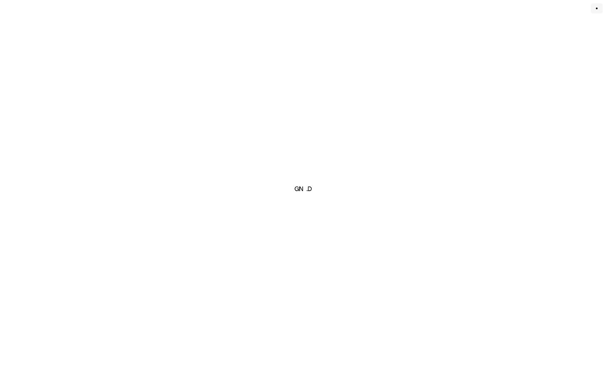
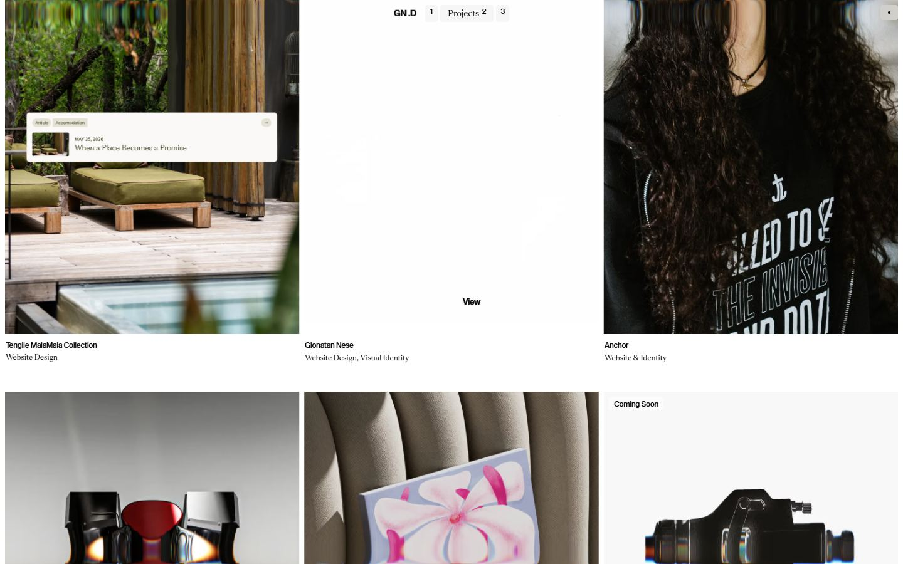
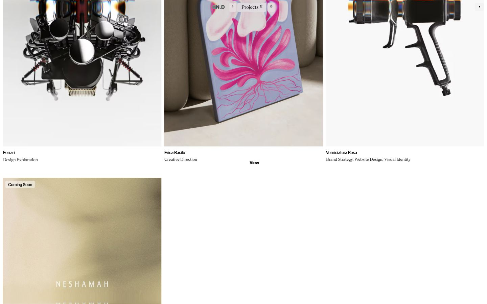
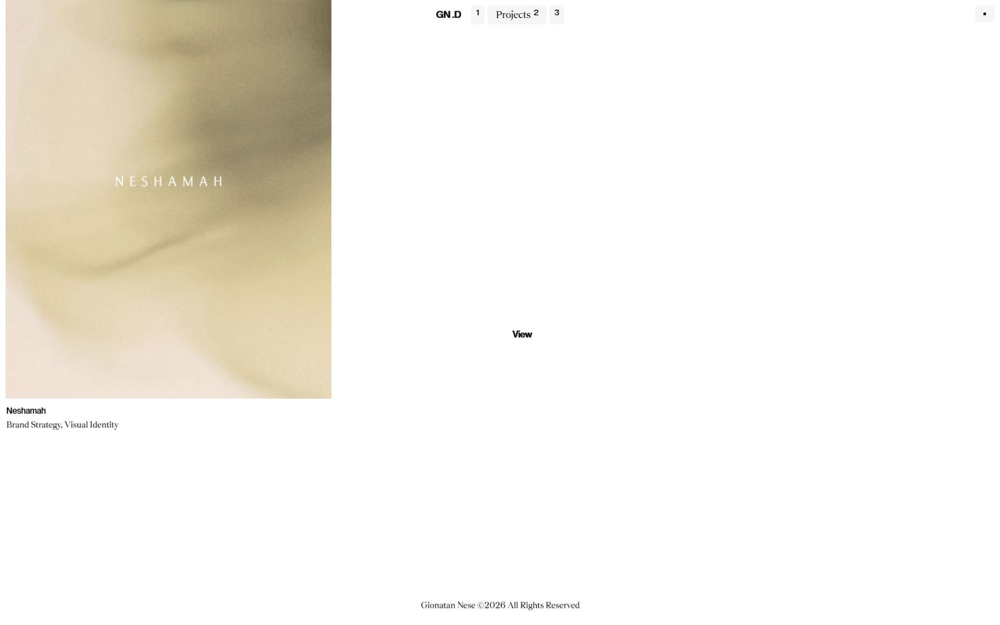
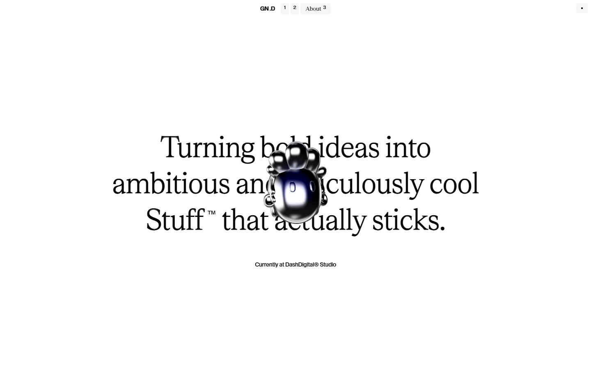
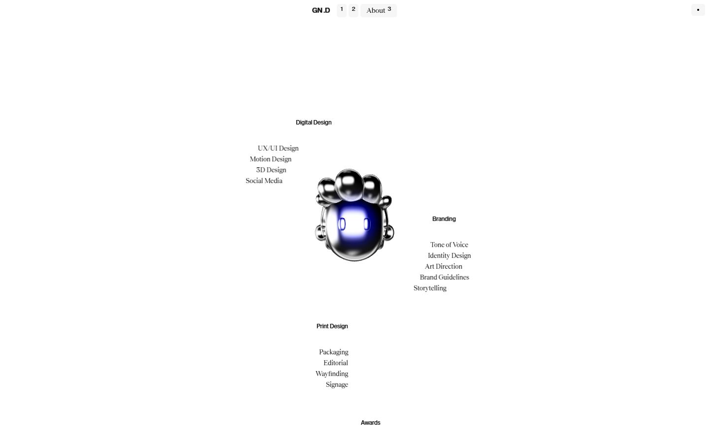
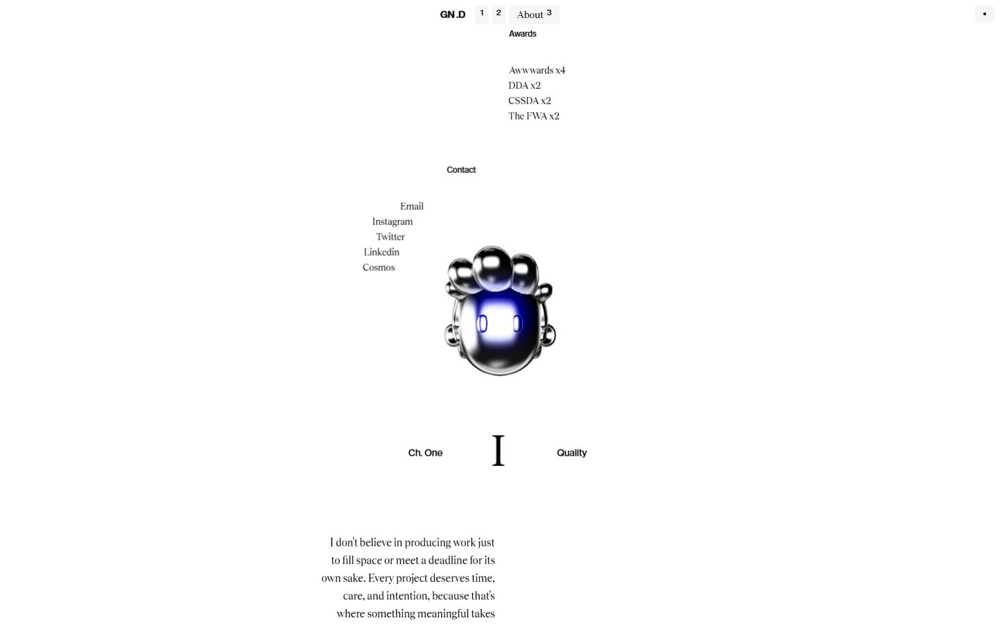
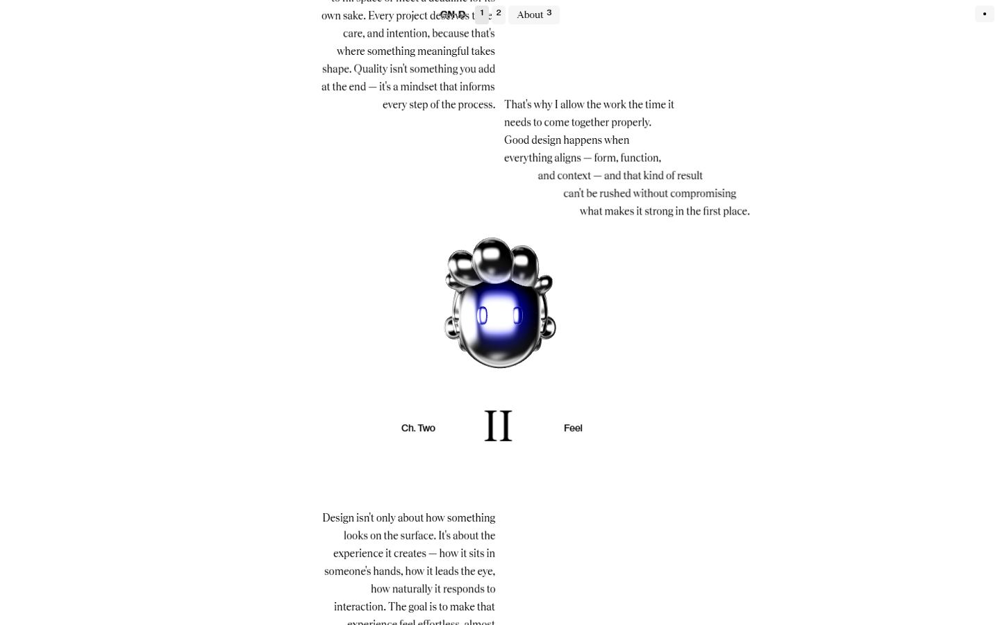

Gionatan Nese 26
Captures desktop

Pages internes








Mobile
Stack détectée
CMS Sanity, GSAP, Lil-GUI/Tweakpane (debug), Next.js, Postprocessing, React, ScrollTrigger, SplitText/SplitType, Three.js, WebGL
Shaders GLSL personnalisés extraits : 36 (voir shaders.glsl)
Design tokens
Couleurs (fonds, pondérées par surface)
#ffffff · #ededed · #000000
Couleurs de texte
#000000 · #ffffff
Polices utilisées (par volume de texte)
LayGrotesk · Teodor
Fichiers de police chargés
Typographie
| Élément | Police | Taille | Graisse | Interligne | Interlettrage | Casse |
|---|---|---|---|---|---|---|
| h1 | LayGrotesk, sans-serif | 16px | 400 | 24px | normal | none |
| h2 | LayGrotesk, sans-serif | 16px | 400 | 24px | normal | none |
| h3 | LayGrotesk, sans-serif | 16px | 400 | 24px | normal | none |
| p | LayGrotesk, sans-serif | 16px | 400 | 24px | normal | none |
| a | LayGrotesk, sans-serif | 12px | 400 | 16px | normal | none |
| li | LayGrotesk, sans-serif | 16px | 400 | 24px | normal | none |
| body | LayGrotesk, sans-serif | 16px | 400 | 24px | normal | none |
Échelle des tailles de texte
16px (44) · 14px (6) · 15px (3) · 11px (3) · 12px (1) · 13px (1)
Arrondis
4px · 3.35544e+07px
Transitions CSS fréquentes
Points de rupture (media queries)
40rem · 64rem · 1025px · 48rem · 80rem · 96rem · 1024px
Animations CSS (@keyframes)
(aucune)
Variables CSS (:root)
--font-sans: ui-sans-serif, system-ui, sans-serif, "Apple Color Emoji", "Segoe UI Emoji", "Segoe UI Symbol", "Noto Color Emoji"; --font-mono: ui-monospace, SFMono-Regular, Menlo, Monaco, Consolas, "Liberation Mono", "Courier New", monospace; --color-black: #000; --color-white: #fff; --spacing: .25rem; --text-xs: .75rem; --text-xs--line-height: calc(1 / .75); --text-sm: .875rem; --text-sm--line-height: calc(1.25 / .875); --text-base: 1rem; --text-base--line-height: calc(1.5 / 1); --radius-sm: .25rem; --blur-2xl: 40px; --blur-3xl: 64px; --default-transition-duration: .15s; --default-transition-timing-function: cubic-bezier(.4, 0, .2, 1); --default-font-family: var(--font-sans); --default-mono-font-family: var(--font-mono); --font-lay-grotesk: "LayGrotesk", sans-serif; --font-teodor: "Teodor", serif;
Structure de la home
Hauteur : 900 px — 183 nœuds DOM — canvas 1, vidéos 0, images 0
| # | Bloc | Hauteur | Titre | Médias |
|---|---|---|---|---|
| 1 | canvas . | 900 | 0 |
Navigation : Creative Space1 · Projects2 · About3
Boutons / CTA :
SEO
Plan des titres
Performance (mesure locale, Chrome headless, connexion non bridée)
Mobile
Fichiers
captures/ : arrivée, scroll desktop (1440×900), pleine page, pages internes, mobile (390×844 @2x) ; vidéo de scroll dans la release GitHub « videos » (lien en haut de fiche)page.html : DOM rendu · styles.css : CSS chargé · scripts/ : JS chargé (index dans _index.json) · shaders.glsl : shaders extraits · rea-bundle.json : analyse REA du bundle (chunks, routes, endpoints)